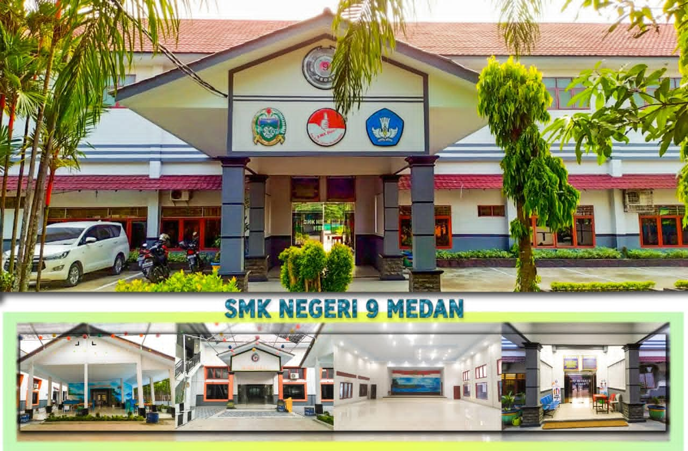
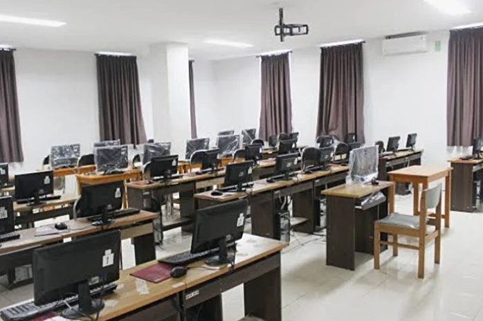

WELCOME

Website ini dibuat oleh Kelompok 11 untuk memenuhi tugas Mata Pelajaran Front-End. SMK Negeri 9 Medan adalah sekolah kejuruan terbaik di Sumatera Utara yang fokus mencetak lulusan siap kerja.
Profil Sekolah
| Nama Sekolah | SMK Negeri 9 Medan |
|---|---|
| NPSN | 10202589 |
| Alamat | Jl. PATRIOT 20 A MEDAN |
| Akreditasi | A |
| Website | smkn9medan.sch.id |
Visi & Misi
Visi: Menjadi SMK Pusat Keunggulan yang menghasilkan lulusan berkompeten dan berkarakter
Misi: Menyelenggarakan pendidikan vokasi berbasis industri dan teknologi
Fasilitas Sekolah



- Laboratorium Komputer & Jaringan
- Ruang Kelas
- Perpustakaan
- Lapangan Olahraga
- Masjid & UKS
Jurusan di SMKN 9 Medan
| No | Kode Jurusan | Nama Jurusan |
|---|---|---|
| 1 | RPL | Rekayasa Perangkat Lunak |
| 2 | TKJ | Teknik Jaringan Komputer dan Telekomunikasi |
| 3 | DKV | Desain Komunikasi Visual |
| 4 | PSPT | Produksi Siaran Program Televisi |
Anggota Kelompok 11
Fanny
NIS: 12345
Job: Desain & Content

Meilani
NIS: 12346
Job: Riset Data
SURYA WIDJAYA
NIS: 12347
Job: Codinger